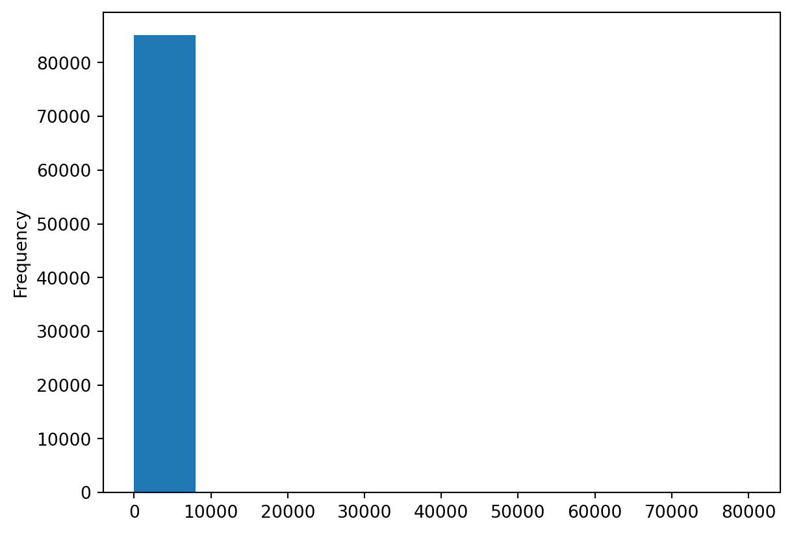
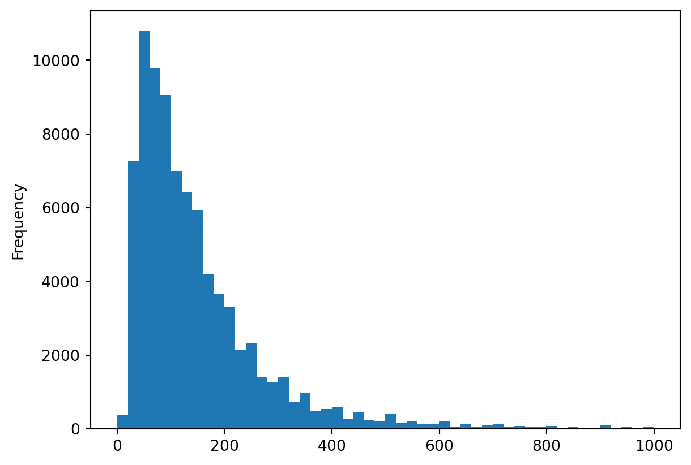
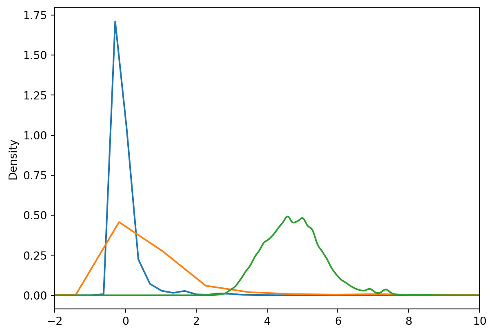
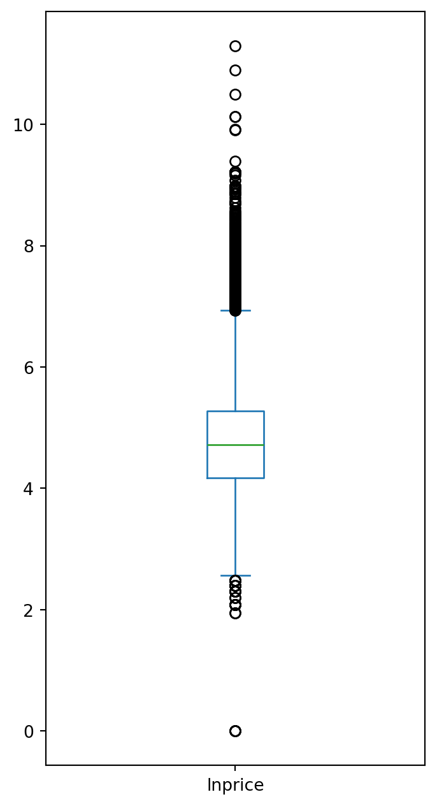
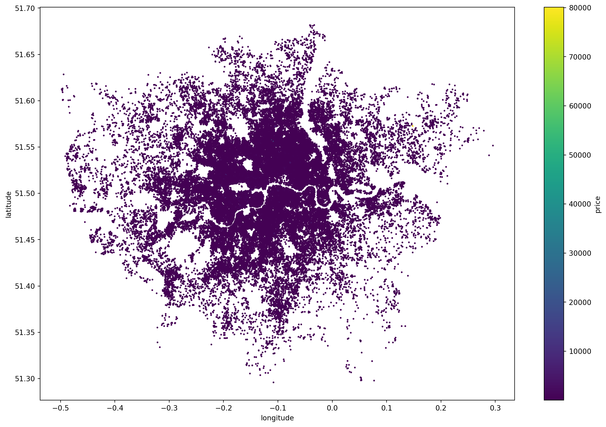
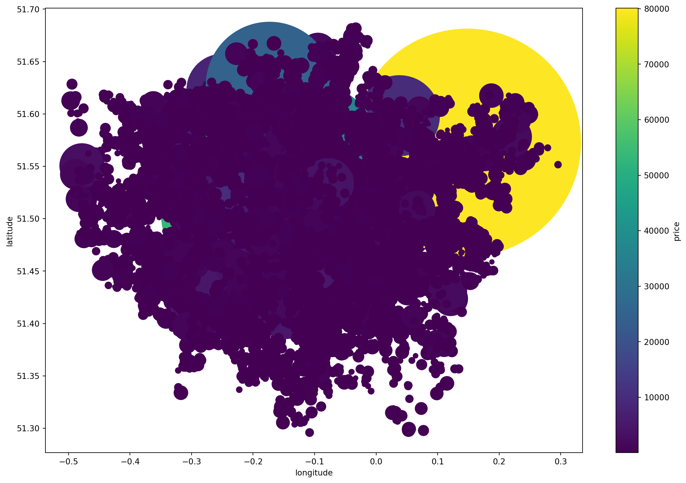
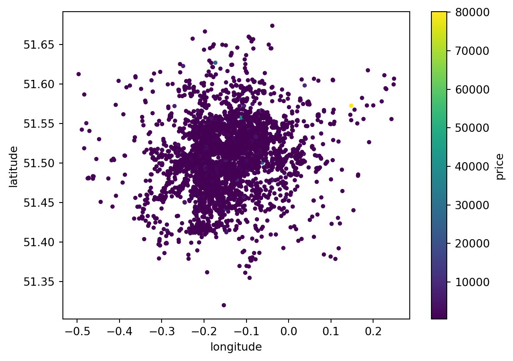
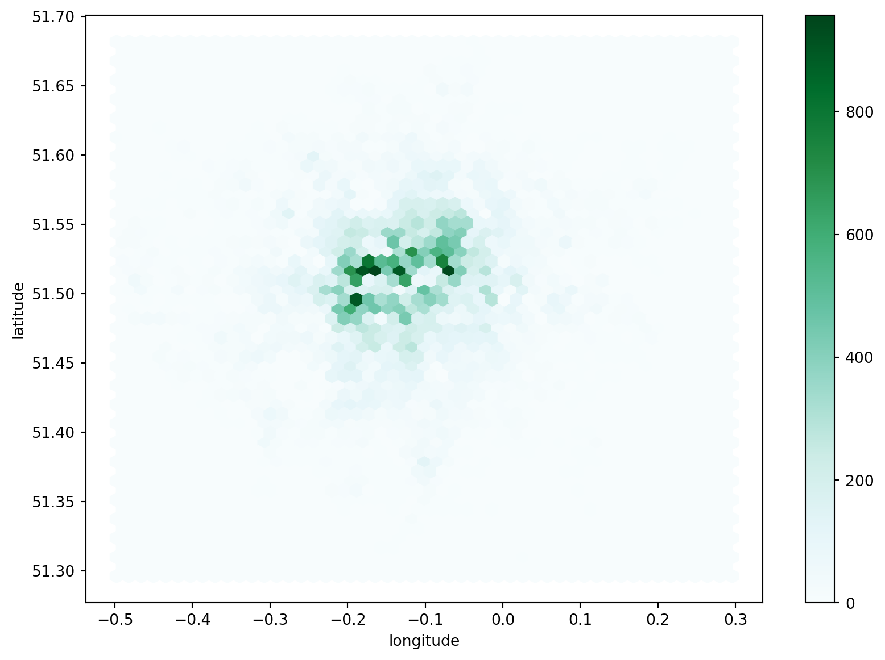

import os
import numpy as np
import pandas as pdPractical 6: Numeric Data
Easing into EDA with Pandas
This session is a tour-de-pandas; since this is Python’s equivalent of the tidyverse meets data.tables it is fundamental to the data science ecosystem and is probably one of the most-widely used libraries in the language as a whole. I get more than 286,000 questions tagged with pandas on StackOverflow.
This week we are also going to start looking at the InsideAirbnb data which forms the core of the work that we do over the rest of the term. The focus of this notebook is simple numeric data: no mapping or text data… yet… and direct manipulation of data types, derivation of summary statistics, and simple plotting.
We hope that you will be able to draw on the past few practical sessions to develop a more intuitive understanding of how to interact with pandas since it supports both a ‘dictionary-of-lists’ style of interaction and a methods-based style of interaction with the ‘Data Frame’.
Important
Conceptually, this practical links together all of the preceding ones; you will find data structures, classes and methods, reading CSV files from a remote location, numpy, and more than you ever wanted to know about data types in Python. Making these connections will make the remainder of term much, much easier, so it might be worth revising this practical over Reading Week so make sure it all makes sense!
The Importance of EDA
After a few weeks getting to grips with Python, we’re now going to start working with some real data. One of the first things that we do when working with any new data set is to familiarise ourselves with it. There are a huge number of ways to do this, but there are no shortcuts to:
- Reading about the data (how it was collected, what the sample size was, etc.)
- Reviewing any accompanying metadata (data about the data, column specs, etc.)
- Looking at the data itself at the row- and column-levels
- Producing descriptive statistics
- Visualising the data using plots
You should use all of these together to really understand where the data came from, how it was handled, and whether there are gaps or other problems. If you’re wondering which comes first, the concept of start with a chart is always good… though we’ve obviously not quite gotten there yet! This week we want you to get a handle on pandas itself, so although we will do some plotting of charts, we’ll focus on 3-4 with a tiny bit of 5. There will be much more on plotting charts next week, and you should be looking into 1 and 2 yourself based on what’s been written both on the Inside Airbnb web site and in the suggested readings.
So although they don’t need to be done now, you probably want to add both those links to your reading list!
Preamble
🔗 Connections
It’s always sensible to import packages these at the top of the notebook:
- Because it lets everyone know what they need to have installed to run your code.
- It’s easy to run this and then skip further down the notebook if you have already done some of the work and saved an intermediate output.
Beyond what we provide below there are numerous useful introductions; one of our favourites is from Greg Reda, and there are some good videos on our YouTube channel. And of course, there’s TONS of stuff on StackOverflow. If you want an actual physical book, you might try McKinney (2017).
However, one thing you will really want to bookmark is the official documentation since you will undoubtedly need to refer to it fairly regularly. Note: this link is to the most recent release. Over time there will be updates published and you may find that you no longer have the most up-to-date version. If you find that you are now using an older version of pandas and the methods have changed then you’ll need to track down the specific version of the documentation that you need from the home page.
You can always check what version you have installed like this:
print(pd.__version__)2.2.3
Tip
The <package_name>.__version__ approach isn’t guaranteed to work with every package, but it will work with most of them. Remember that variables and methods starting and ending with ‘__’ are private and any interaction with them should be approached very, very carefully.
Reading and Writing Data
🔗 Connections
Pandas can do a lot, and you might be feeling a little intimidated by this, but here’s the thing: we were already writing something like pandas from scratch! That’s because pandas takes a column-view of data in the same way that our Dictionary-of-Lists did, it’s just that it’s got a lot more features than our ‘simple’ tool did. That’s why the documentation is so much more forbidding and why pandas is so much more powerful.
But at its heart, a pandas Data Frame (df for short) is a collection of Data Series objects (i.e. columns) with an index. Each Series is like one of our column-lists from the last notebook. And the df is like the dictionary that held the data together. So you’ve seen this before and you already know what’s going on… or at least you now have an analogy that you can use to make sense of pandas:
myDataFrame = {
'<column_name_1>': <Series_1>,
'<column_name_2>': <Series_2>,
'<column_name_3>': <Series_3>
}And pandas gives us two ways to access that data:
- Using a method syntax:
myDataFrame.column_name_1 - Using a dictionary syntax:
myDataFrame['column_name_1']
Depending on which syntax you prefer, you can use these interchangeably. The only times you have to choose one over the other are:
- Assignment (e.g.
myDataFrame['column_name_1'] = ...); - Columns with spaces in their names (e.g.
myDataFrame['Column Name 1')).
Reading Remote Data
Difficulty: Low (this time around).
You will need to do several things here to read the remote, compressed CSV file specified by url into a data frame called df. Setting low_memory=False ensures that pandas will try to load the entire data set before guessing the data format! Obviously, with very large files this is probably a bad idea and it’s possible to force a particular column type while readng in the data as well. For larger data sets there are platforms like Dask (see, eg, this), and beyond that are other options.
# Set download URL
ymd = '20240614'
city = 'London'
host = 'https://orca.casa.ucl.ac.uk'
url = f'{host}/~jreades/data/{ymd}-{city}-listings.csv.gz'Question
# your code here
df = pd.read_csv(??, compression='gzip', low_memory=False)
print(f"Data frame is {df.shape[0]:,} x {df.shape[1]}")You should get a data frame containing 75 columns and 93,486 rows of data.
Inspecting the Data Frame
Difficulty: Low.
Let’s get a general sense of the data by printing out information about the data frame. There are several ways to do this (and we’ll see another futher on):
df.describe(percentiles=None, include=None, exclude=None, datetime_is_numeric=False)– descriptive stats for all numeric columnsdf.info(verbose=None, buf=None, max_cols=None, memory_usage=None, show_counts=None)– summarises all columns, but without distribution informationdf.memory_usage(index=True, deep=True)– memory usage details about each column (can be quite slow as it’s doing a lot of digging)
Question
What is another term for the 0.5 percentile?
Describing
Describing a data frame provides general information about numeric columns, such as the median, IQR, or number of discrete values.
So to show the 5th and 95th percentiles you need to pass an argument to describe to override the default report from pandas:
Question
df.describe(percentiles=[??])Info
The info method provides a more system-oriented view of the data frame, helping you to understand what each column is composed of, how many NAs there might be, and some high-level (but often incomplete) data on performance.
df.info(verbose=True)<class 'pandas.core.frame.DataFrame'>
RangeIndex: 93486 entries, 0 to 93485
Data columns (total 75 columns):
# Column Non-Null Count Dtype
--- ------ -------------- -----
0 id 93481 non-null float64
1 listing_url 93485 non-null object
2 scrape_id 93485 non-null object
3 last_scraped 93485 non-null object
4 source 93486 non-null object
5 name 93486 non-null object
6 description 90297 non-null object
7 neighborhood_overview 46673 non-null object
8 picture_url 93477 non-null object
9 host_id 93486 non-null float64
10 host_url 93486 non-null object
11 host_name 93480 non-null object
12 host_since 93480 non-null object
13 host_location 72291 non-null object
14 host_about 47802 non-null object
15 host_response_time 62226 non-null object
16 host_response_rate 62231 non-null object
17 host_acceptance_rate 67455 non-null object
18 host_is_superhost 93022 non-null object
19 host_thumbnail_url 93475 non-null object
20 host_picture_url 93475 non-null object
21 host_neighbourhood 46906 non-null object
22 host_listings_count 93475 non-null object
23 host_total_listings_count 93475 non-null float64
24 host_verifications 93474 non-null object
25 host_has_profile_pic 93475 non-null object
26 host_identity_verified 93474 non-null object
27 neighbourhood 46675 non-null object
28 neighbourhood_cleansed 93481 non-null object
29 neighbourhood_group_cleansed 5 non-null float64
30 latitude 93481 non-null float64
31 longitude 93481 non-null float64
32 property_type 93481 non-null object
33 room_type 93481 non-null object
34 accommodates 93481 non-null float64
35 bathrooms 61355 non-null float64
36 bathrooms_text 93331 non-null object
37 bedrooms 81800 non-null float64
38 beds 61289 non-null float64
39 amenities 93481 non-null object
40 price 61423 non-null object
41 minimum_nights 93481 non-null object
42 maximum_nights 93481 non-null float64
43 minimum_minimum_nights 93480 non-null float64
44 maximum_minimum_nights 93480 non-null float64
45 minimum_maximum_nights 93479 non-null object
46 maximum_maximum_nights 93479 non-null object
47 minimum_nights_avg_ntm 93479 non-null float64
48 maximum_nights_avg_ntm 93479 non-null float64
49 calendar_updated 4 non-null float64
50 has_availability 89394 non-null object
51 availability_30 93480 non-null float64
52 availability_60 93480 non-null float64
53 availability_90 93480 non-null float64
54 availability_365 93476 non-null float64
55 calendar_last_scraped 93481 non-null object
56 number_of_reviews 93481 non-null float64
57 number_of_reviews_ltm 93481 non-null float64
58 number_of_reviews_l30d 93481 non-null float64
59 first_review 68740 non-null object
60 last_review 68739 non-null object
61 review_scores_rating 68735 non-null float64
62 review_scores_accuracy 68657 non-null float64
63 review_scores_cleanliness 68664 non-null float64
64 review_scores_checkin 68627 non-null float64
65 review_scores_communication 68652 non-null float64
66 review_scores_location 68626 non-null float64
67 review_scores_value 68627 non-null float64
68 license 0 non-null float64
69 instant_bookable 93476 non-null object
70 calculated_host_listings_count 93476 non-null float64
71 calculated_host_listings_count_entire_homes 93476 non-null float64
72 calculated_host_listings_count_private_rooms 93476 non-null float64
73 calculated_host_listings_count_shared_rooms 93476 non-null float64
74 reviews_per_month 68735 non-null float64
dtypes: float64(36), object(39)
memory usage: 53.5+ MBYou should get that the data frame has a mix of float64, int, and object (text) columns and that some columns contain many nulls. You will also get an estimate of memory usage that may differ substantially from the more complete picture provided below, which suggests a ‘true’ value of 398MB.
Memory Usage
If you really need to get into the ‘weeds’ and profile your data frame because you are crashing Python and seeing messages about ‘core dumped’, or seeing appallingly poor performance, then memory_usage is the way to go:
df.memory_usage(index=True, deep=True)Index 132
id 747888
listing_url 9290686
scrape_id 6637426
last_scraped 6263498
...
calculated_host_listings_count 747888
calculated_host_listings_count_entire_homes 747888
calculated_host_listings_count_private_rooms 747888
calculated_host_listings_count_shared_rooms 747888
reviews_per_month 747888
Length: 76, dtype: int64You should see that the data frame uses 417,473,797 bytes of memory, but the really important thing to note here is the difference between string and other types of data: keeping data as raw strings (instead of converting to categories, for instance) uses up a lot more memory and this can have a huge impact on the performance of your code.
Printing the Columns
Finally, I find it very useful to be able to quickly print out a list of the columns without all of the details shown above. You just need to print the columns as a list:
print(df.columns.to_list())['id', 'listing_url', 'scrape_id', 'last_scraped', 'source', 'name', 'description', 'neighborhood_overview', 'picture_url', 'host_id', 'host_url', 'host_name', 'host_since', 'host_location', 'host_about', 'host_response_time', 'host_response_rate', 'host_acceptance_rate', 'host_is_superhost', 'host_thumbnail_url', 'host_picture_url', 'host_neighbourhood', 'host_listings_count', 'host_total_listings_count', 'host_verifications', 'host_has_profile_pic', 'host_identity_verified', 'neighbourhood', 'neighbourhood_cleansed', 'neighbourhood_group_cleansed', 'latitude', 'longitude', 'property_type', 'room_type', 'accommodates', 'bathrooms', 'bathrooms_text', 'bedrooms', 'beds', 'amenities', 'price', 'minimum_nights', 'maximum_nights', 'minimum_minimum_nights', 'maximum_minimum_nights', 'minimum_maximum_nights', 'maximum_maximum_nights', 'minimum_nights_avg_ntm', 'maximum_nights_avg_ntm', 'calendar_updated', 'has_availability', 'availability_30', 'availability_60', 'availability_90', 'availability_365', 'calendar_last_scraped', 'number_of_reviews', 'number_of_reviews_ltm', 'number_of_reviews_l30d', 'first_review', 'last_review', 'review_scores_rating', 'review_scores_accuracy', 'review_scores_cleanliness', 'review_scores_checkin', 'review_scores_communication', 'review_scores_location', 'review_scores_value', 'license', 'instant_bookable', 'calculated_host_listings_count', 'calculated_host_listings_count_entire_homes', 'calculated_host_listings_count_private_rooms', 'calculated_host_listings_count_shared_rooms', 'reviews_per_month']You should get a list showing every single column. If you get Index(['id', 'listing_url',...], dtype='object') then you have printed the column index object and you to need to tell the object to convert its output to a list (hint: Google).
Saving the File Locally
Difficulty: Low
Now save the file somewhere local so that you don’t have to keep downloading 40MB of compressed data every time you want to start the practical. We’ll be using this data for the rest of term, so you might as well save yourself some time and bandwidth! We’ll talk more about data processing pipelines over the course of the term, but I’d suggest putting this data set into a data/raw folder because then you can have directories like data/clean and data/analytical as you move through the process of cleaning and prepping your data for analysis.
path = os.path.join('data','raw') # A default location to save raw data
fn = url.split('/')[-1] # What does this do?
print(f"Writing to: {fn}")Writing to: 20240614-London-listings.csv.gzif not os.path.exists(path): # And what does *this* do?
print(f"Creating {path} under {os.getcwd()}")
os.makedirs(path)
if not os.path.exists(os.path.join(path,fn)):
df.to_csv(os.path.join(path,fn), index=False)
print("Done.")Managing Your Data
When starting out it’s common to think in terms of there being one input (the raw data) and one output (the results) to an analysis. In practice, you will have many intermediate outputs used as ‘milestones’ in the overall analysis:
- You might have a ‘canonical’ data file that has dealt with formatting issues and converted the columns to appropriate data types.
- You might have a ‘clean’ data file that has dealt with observations that seem to be incomplete or otherwise improperly formatted.
- You might generate subsets by region or area.
- You might produce an ‘analytical’ or ‘final’ data set appropriate to a specific analysis.
Most importantly, if you are going to run the same analysis multiple times using data from different time periods (e.g. Land Registry’s Price Paid Data is updated every month) then you will multiple versions of each of each of the above.
But, in addition, you might also be working with such a large data set that processing the entire thing every time you want to do some development work is impractical: do you want to load 1 billion rows only to find out that you needed 1,000 of them or that one of your columns is incorrectly formatted?
So although you could do the next few steps as part of loading the raw data, I always prefer to keep the original data set handy since I almost always discover that there are fields I didn’t realise I needed when I started my work.
So my approach to coding is usually:
- Download the raw file and save it locally in a
data/rawdirectory. - Load the first
nrowsof data so that I can quickly:- Check that the specification matches the data and select columns/rows accordingly.
- Identify obviously invalid rows/columns and investigate further.
- Check the code to fix data types and (where relevant) values works.
- Write this new, smaller file (\(m` << m\) and \(n` << n\)) out to a
data/cleanordata/canonicaldirectory (depending on whether formatting the columns is so complex or takes so long on a large data set that it needs to be separated out from actual cleaning). - Test out some initial ideas for further analysis.
- Re-run the code (remove the
nrowslimit) using the full data set.
Difficulty: Moderate
Although the code here is simple, the logic is not.
File Names
You should always be looking for ways to avoid hard-coding values that might change over time, especially those linked to the date of the data file.
In this case you might try to work out how to make it easy to update the code to download the latest file. For instance, if the file looks like 2022-09-10-listings.csv.gz then I might well specify the url as {date}-listings.csv.gz or {year}-{month}-{day}-listings.csv.gz and set up the variables that I need beforehand or in a separate file.
Using parameters makes it easier to write robust code that doesn’t have unwanted side-effects. Here’s a common one: you write code to download and process a file named 20221111-data.csv.gz. After doing all the steps in Tasks 2 and 3 below you save it to clean-data.csv.gz.
Question
What happens when your boss asks you to process 20221211-data.csv.gz?
File Loading
Now let’s write something that will allow us to more quickly write our code and validate the results in exploratory phase. For simplicity I’ve called this ‘testing’, but you could also think of it as ‘dev’ mode. What we want is to be able to easily swap between testing and operational contexts using a ‘switch’ (typically, a Boolean value) and limit the data load in testing mode.
To achieve this you could set pandas to:
- Load only the first 10,000 rows using
nrowsif we are testing - Use the columns specified in
cols - Allow pandas to load the entire data set before deciding on the column type by setting
low_memoryappropriately.
Row Subsetting
Let’s tackle the rows problem first:
Question
testing = True
if testing:
df = pd.read_csv(os.path.join(path,fn),
low_memory=??, ??)
else:
df = pd.read_csv(os.path.join(path,fn),
low_memory=??)
print(f"Data frame is {df.shape[0]:,} x {df.shape[1]}")So notice how this code deliberately works the same for either testing or operational execution – we just flip between the option by changing the testing variable from True to False!
To make this more robust and useful we could use this testing variable throughout our code if we wanted to change other behaviours based on development/deployment context. The state of the switch could then be set globally using an external configuration file (usually just called a ‘conf file’). The easiest way to do this is to have a conf.py which contains your global parameters and then every script or notebook file reads in the configuration and sets these variables.
Something like:
testing = FalseAnd:
from conf import *Column Subsetting
Now let’s tackle the column problem… In order to avoid having to load lots of data that we aren’t sure we need yet, we can restrict the columns that we load. We got cols below by copying the output of (df.columns.to_list() and then removing the fields that we thought we weren’t interested in.
cols = ['id', 'listing_url', 'last_scraped', 'name', 'description', 'host_id',
'host_name', 'host_since', 'host_location', 'host_about', 'host_is_superhost',
'host_listings_count', 'host_total_listings_count', 'host_verifications',
'latitude', 'longitude', 'property_type', 'room_type', 'accommodates',
'bathrooms', 'bathrooms_text', 'bedrooms', 'beds', 'amenities', 'price',
'minimum_nights', 'maximum_nights', 'availability_365', 'number_of_reviews',
'first_review', 'last_review', 'review_scores_rating', 'license',
'reviews_per_month']
print(f"Cols contains {len(cols)} columns.")Cols contains 34 columns.So let’s extend our previous answer
Question
testing = True
if testing:
df = pd.read_csv(os.path.join(path,fn),
low_memory=False, nrows=10000, ??)
else:
df = pd.read_csv(os.path.join(path,fn),
low_memory=False, ??)
print(f"Data frame is {df.shape[0]:,} x {df.shape[1]}")Releasing Memory
A particular risk when working with Jupyter notebooks is that you either: a) have run code in an order other than the order shown in the notebook; or b) have made edits to code but not re-run the changed code. So you’re still working from code that is no longer visible!
When that happens you can get very confusing issues because what you see doesn’t square with what the computer has executed. To resolve this without having to re-run the entire notebook (though that can also be a good choice!) you might want to ‘delete’ the current object and re-load or re-run the relevant data or code.
del(df)So we use del(df) to ensure that we aren’t accidentally using the ‘old’ data frame. But another good reason to delete data you’re no longer using is to free up memory.
Exploring Your Data
Let’s start over from the saved data:
df = pd.read_csv(os.path.join(path,fn),
low_memory=False, usecols=cols)Selecting Rows
🔗 Connections
You will want to refer to the Randomness lecture to understand how we can select the same random sample each time and to the session on Logic lecture to cover NaNs and NAs.
Difficulty: Low
I often like to start my EDA by simply printing out randomly-selected rows to get a feel for what’s in the data. Does what I see square with what I read in the documentation? What does the name look like? What do I see in last_scraped and is it a sensible? What’s the id field for?
df.sample(3)| id | listing_url | last_scraped | name | description | host_id | host_name | host_since | host_location | host_about | ... | price | minimum_nights | maximum_nights | availability_365 | number_of_reviews | first_review | last_review | review_scores_rating | license | reviews_per_month | |
|---|---|---|---|---|---|---|---|---|---|---|---|---|---|---|---|---|---|---|---|---|---|
| 26908 | 2.742332e+07 | https://www.airbnb.com/rooms/27423325 | 2023-09-07 | Serviced apartment in London · 2 bedrooms · 2 ... | <b>The space</b><br />The 2 Two Bedroom apart... | 194048242.0 | Ashburn | 2018-06-07 | NaN | NaN | ... | $511.00 | 1 | 1125.0 | 201.0 | 1.0 | 2022-08-27 | 2022-08-27 | 5.00 | NaN | 0.08 |
| 76365 | 9.073725e+17 | https://www.airbnb.com/rooms/907372454601544521 | 2023-09-06 | Condo in Greater London · ★4.45 · 1 bedroom · ... | This stylish place to stay is perfect for grou... | 81827675.0 | Ayoob | 2016-07-05 | London, United Kingdom | I live and work in central London and enjoy h... | ... | $149.00 | 1 | 365.0 | 293.0 | 11.0 | 2023-06-08 | 2023-08-29 | 4.45 | NaN | 3.63 |
| 29748 | 3.079404e+07 | https://www.airbnb.com/rooms/30794039 | 2023-09-07 | Rental unit in London · 1 bedroom · 1 bed · 1 ... | NaN | 118972937.0 | Jane | 2017-03-03 | Abbots Leigh, United Kingdom | Brown hair\nFemale \nRun my own company | ... | $249.00 | 1 | 1125.0 | 0.0 | 2.0 | 2018-12-18 | 2023-07-12 | 5.00 | NaN | 0.03 |
3 rows × 34 columns
See if you can work out from the documentation (Google search time!) how to get the same ‘random’ sample every time you re-run this code block:
Question
df.sample(3, ??)Selecting Columns
If you look very closely, you’ll see that pandas isn’t showing you the full range of columns since there are 34! If you’d like to only look at specific columns then you can specify them after the sample method call using what looks like a nested list: [[<column names as strings>]].
I’d like you to sample 3 random rows, selecting the ‘latitude’, ‘longitude’, ‘license’, ‘property_type’, ‘room_type’ and ‘price’ columns only.
Question
df.sample(??)[??]Your answer should look like this:
| latitude | longitude | license | property_type | room_type | price | |
|---|---|---|---|---|---|---|
| 30036 | 51.459590 | -0.125550 | NaN | Entire rental unit | Entire home/apt | $85.00 |
| 18694 | 51.595440 | -0.251620 | NaN | Private room in rental unit | Private room | $42.00 |
| 6829 | 51.530279 | -0.197675 | NaN | Entire rental unit | Entire home/apt | $282.00 |
| latitude | longitude | license | property_type | room_type | price | |
|---|---|---|---|---|---|---|
| 30036 | 51.459590 | -0.125550 | NaN | Entire rental unit | Entire home/apt | $85.00 |
| 18694 | 51.595440 | -0.251620 | NaN | Private room in rental unit | Private room | $42.00 |
| 6829 | 51.530279 | -0.197675 | NaN | Entire rental unit | Entire home/apt | $282.00 |
Dealing with NaNs and Nulls
Difficulty: Hard.
There is a lot going on here and you should be paying close attention.
If you really dig into the data you will see that a number of data types that aren’t ‘appropriate’ for their contents: the id columns are floats; the dates aren’t dates; there’s a boolean that’s not a boolean… It would be nice to fix these!
# Add some columns here...
Note
I had intended to ask you to fix these by combining code from previous weeks with information provided in the lecture, but it turns out that the InsideAirbnb data set is dirty. There are a lot of NaN values and some of these are deeply problematic for some of the column types in pandas. There are also a number of challenges with other columns so, instead, I’ve opted to show you how I would clean this data as a first pass to get it into a format where it’s tractable for further cleaning.
Identifying Problem Rows
The reason I’m not asking you to do this part yourselves is that it took me nearly an hour just to work out why I couldn’t convert some of the columns to the right data types; then I started finding rows like these:
df[df.price.isna()]| id | listing_url | last_scraped | name | description | host_id | host_name | host_since | host_location | host_about | ... | price | minimum_nights | maximum_nights | availability_365 | number_of_reviews | first_review | last_review | review_scores_rating | license | reviews_per_month | |
|---|---|---|---|---|---|---|---|---|---|---|---|---|---|---|---|---|---|---|---|---|---|
| 8668 | 1.012818e+07 | https://www.airbnb.com/rooms/10128178 | 2023-09-06 | Loft in London · ★4.15 · 2 bedrooms · 2 beds ·... | This is a lived in apartment with two medium s... | 233649.0 | Michelle | 2010-09-13 | London, United Kingdom | Michelle McLaughlin - A professional who work... | ... | NaN | NaN | NaN | NaN | NaN | NaN | NaN | NaN | NaN | NaN |
| 11814 | 1.359431e+07 | https://www.airbnb.com/rooms/13594306 | 2023-09-06 | Rental unit in London · ★5.0 · 2 bedrooms · 2 ... | Beautiful quiet flat with high ceilings and lo... | 18380563.0 | Cécile And Maarten | 2014-07-19 | London, United Kingdom | Hello! We live in London with our two daughter... | ... | NaN | NaN | NaN | NaN | NaN | NaN | NaN | NaN | NaN | NaN |
| 21912 | 2.206322e+07 | https://www.airbnb.com/rooms/22063217 | 2023-09-07 | Rental unit in Greater London · 1 bedroom · 1 ... | <b>The space</b><br />Parejas | 1824036.0 | Arya | 2012-02-28 | London, United Kingdom | Citizen of the world. | ... | NaN | NaN | NaN | NaN | NaN | NaN | NaN | NaN | NaN | NaN |
| 48138 | 5.342282e+07 | https://www.airbnb.com/rooms/53422816 | 2023-09-06 | Condo in London · ★4.93 · 1 bedroom · 1 bed · ... | We've newly refurbished our 1-bed apartment fo... | 30626999.0 | Sitara | 2015-04-05 | London, United Kingdom | Love travelling and meeting people! | ... | NaN | NaN | NaN | NaN | NaN | NaN | NaN | NaN | NaN | NaN |
| 48765 | 5.389986e+07 | https://www.airbnb.com/rooms/53899858 | 2023-09-06 | Loft in Greater London · ★4.0 · 1 bedroom · 1 ... | Enjoy a stylish experience at this centrally-l... | 233649.0 | Michelle | 2010-09-13 | London, United Kingdom | Michelle McLaughlin - A professional who work... | ... | NaN | NaN | NaN | NaN | NaN | NaN | NaN | NaN | NaN | NaN |
| 68884 | 8.446589e+17 | https://www.airbnb.com/rooms/844658929307006668 | 2023-09-06 | Rental unit in Greater London · 1 bedroom · 1 ... | Stylish apartment Located in sought after neig... | 10573878.0 | Liz | 2013-12-11 | London, United Kingdom | I love hosting and meeting worldly guests trav... | ... | NaN | NaN | NaN | NaN | NaN | NaN | NaN | NaN | NaN | NaN |
| 74896 | 8.971145e+17 | https://www.airbnb.com/rooms/897114471991989638 | 2023-09-06 | Rental unit in Greater London · 1 bedroom · 1 ... | Tucked away right off the high street, near 50... | 11520835.0 | Barry | 2014-01-21 | Levittown, NY | Hey there! born and raised in New York. Airbnb... | ... | NaN | NaN | NaN | NaN | NaN | NaN | NaN | NaN | NaN | NaN |
7 rows × 34 columns
df[df.room_type.isna()]| id | listing_url | last_scraped | name | description | host_id | host_name | host_since | host_location | host_about | ... | price | minimum_nights | maximum_nights | availability_365 | number_of_reviews | first_review | last_review | review_scores_rating | license | reviews_per_month | |
|---|---|---|---|---|---|---|---|---|---|---|---|---|---|---|---|---|---|---|---|---|---|
| 8668 | 1.012818e+07 | https://www.airbnb.com/rooms/10128178 | 2023-09-06 | Loft in London · ★4.15 · 2 bedrooms · 2 beds ·... | This is a lived in apartment with two medium s... | 233649.0 | Michelle | 2010-09-13 | London, United Kingdom | Michelle McLaughlin - A professional who work... | ... | NaN | NaN | NaN | NaN | NaN | NaN | NaN | NaN | NaN | NaN |
| 11814 | 1.359431e+07 | https://www.airbnb.com/rooms/13594306 | 2023-09-06 | Rental unit in London · ★5.0 · 2 bedrooms · 2 ... | Beautiful quiet flat with high ceilings and lo... | 18380563.0 | Cécile And Maarten | 2014-07-19 | London, United Kingdom | Hello! We live in London with our two daughter... | ... | NaN | NaN | NaN | NaN | NaN | NaN | NaN | NaN | NaN | NaN |
| 21912 | 2.206322e+07 | https://www.airbnb.com/rooms/22063217 | 2023-09-07 | Rental unit in Greater London · 1 bedroom · 1 ... | <b>The space</b><br />Parejas | 1824036.0 | Arya | 2012-02-28 | London, United Kingdom | Citizen of the world. | ... | NaN | NaN | NaN | NaN | NaN | NaN | NaN | NaN | NaN | NaN |
| 48138 | 5.342282e+07 | https://www.airbnb.com/rooms/53422816 | 2023-09-06 | Condo in London · ★4.93 · 1 bedroom · 1 bed · ... | We've newly refurbished our 1-bed apartment fo... | 30626999.0 | Sitara | 2015-04-05 | London, United Kingdom | Love travelling and meeting people! | ... | NaN | NaN | NaN | NaN | NaN | NaN | NaN | NaN | NaN | NaN |
| 48765 | 5.389986e+07 | https://www.airbnb.com/rooms/53899858 | 2023-09-06 | Loft in Greater London · ★4.0 · 1 bedroom · 1 ... | Enjoy a stylish experience at this centrally-l... | 233649.0 | Michelle | 2010-09-13 | London, United Kingdom | Michelle McLaughlin - A professional who work... | ... | NaN | NaN | NaN | NaN | NaN | NaN | NaN | NaN | NaN | NaN |
| 68884 | 8.446589e+17 | https://www.airbnb.com/rooms/844658929307006668 | 2023-09-06 | Rental unit in Greater London · 1 bedroom · 1 ... | Stylish apartment Located in sought after neig... | 10573878.0 | Liz | 2013-12-11 | London, United Kingdom | I love hosting and meeting worldly guests trav... | ... | NaN | NaN | NaN | NaN | NaN | NaN | NaN | NaN | NaN | NaN |
| 74896 | 8.971145e+17 | https://www.airbnb.com/rooms/897114471991989638 | 2023-09-06 | Rental unit in Greater London · 1 bedroom · 1 ... | Tucked away right off the high street, near 50... | 11520835.0 | Barry | 2014-01-21 | Levittown, NY | Hey there! born and raised in New York. Airbnb... | ... | NaN | NaN | NaN | NaN | NaN | NaN | NaN | NaN | NaN | NaN |
7 rows × 34 columns
df[~(df.price.str.startswith('$', na=False))]| id | listing_url | last_scraped | name | description | host_id | host_name | host_since | host_location | host_about | ... | price | minimum_nights | maximum_nights | availability_365 | number_of_reviews | first_review | last_review | review_scores_rating | license | reviews_per_month | |
|---|---|---|---|---|---|---|---|---|---|---|---|---|---|---|---|---|---|---|---|---|---|
| 8668 | 1.012818e+07 | https://www.airbnb.com/rooms/10128178 | 2023-09-06 | Loft in London · ★4.15 · 2 bedrooms · 2 beds ·... | This is a lived in apartment with two medium s... | 233649.0 | Michelle | 2010-09-13 | London, United Kingdom | Michelle McLaughlin - A professional who work... | ... | NaN | NaN | NaN | NaN | NaN | NaN | NaN | NaN | NaN | NaN |
| 8669 | NaN | within an hour | 71% | https://a0.muscache.com/im/pictures/user/652bf... | https://a0.muscache.com/im/pictures/user/652bf... | 3.0 | t | t | London, England, United Kingdom | Hackney | ... | 170 | 2023-09-06 | 14.0 | NaN | 2.0 | 0 | 0.19 | NaN | NaN | NaN |
| 11814 | 1.359431e+07 | https://www.airbnb.com/rooms/13594306 | 2023-09-06 | Rental unit in London · ★5.0 · 2 bedrooms · 2 ... | Beautiful quiet flat with high ceilings and lo... | 18380563.0 | Cécile And Maarten | 2014-07-19 | London, United Kingdom | Hello! We live in London with our two daughter... | ... | NaN | NaN | NaN | NaN | NaN | NaN | NaN | NaN | NaN | NaN |
| 11815 | NaN | NaN | NaN | https://a0.muscache.com/im/pictures/user/User-... | https://a0.muscache.com/im/pictures/user/User-... | 1.0 | t | t | London, United Kingdom | Brent | ... | 0 | 2023-09-06 | 6.0 | NaN | 1.0 | 0 | 0.07 | NaN | NaN | NaN |
| 21912 | 2.206322e+07 | https://www.airbnb.com/rooms/22063217 | 2023-09-07 | Rental unit in Greater London · 1 bedroom · 1 ... | <b>The space</b><br />Parejas | 1824036.0 | Arya | 2012-02-28 | London, United Kingdom | Citizen of the world. | ... | NaN | NaN | NaN | NaN | NaN | NaN | NaN | NaN | NaN | NaN |
| 21913 | NaN | NaN | NaN | https://a0.muscache.com/defaults/user_pic-50x5... | https://a0.muscache.com/defaults/user_pic-225x... | 1.0 | f | t | NaN | Tower Hamlets | ... | 0 | 2023-09-07 | 2.0 | NaN | 1.0 | 0 | 0.03 | NaN | NaN | NaN |
| 48138 | 5.342282e+07 | https://www.airbnb.com/rooms/53422816 | 2023-09-06 | Condo in London · ★4.93 · 1 bedroom · 1 bed · ... | We've newly refurbished our 1-bed apartment fo... | 30626999.0 | Sitara | 2015-04-05 | London, United Kingdom | Love travelling and meeting people! | ... | NaN | NaN | NaN | NaN | NaN | NaN | NaN | NaN | NaN | NaN |
| 48139 | NaN | NaN | 83% | https://a0.muscache.com/im/pictures/user/3a51c... | https://a0.muscache.com/im/pictures/user/3a51c... | 2.0 | t | t | London, United Kingdom | Tower Hamlets | ... | 179 | 2023-09-06 | 15.0 | NaN | 1.0 | 0 | 0.75 | NaN | NaN | NaN |
| 48765 | 5.389986e+07 | https://www.airbnb.com/rooms/53899858 | 2023-09-06 | Loft in Greater London · ★4.0 · 1 bedroom · 1 ... | Enjoy a stylish experience at this centrally-l... | 233649.0 | Michelle | 2010-09-13 | London, United Kingdom | Michelle McLaughlin - A professional who work... | ... | NaN | NaN | NaN | NaN | NaN | NaN | NaN | NaN | NaN | NaN |
| 48766 | NaN | within an hour | 71% | https://a0.muscache.com/im/pictures/user/652bf... | https://a0.muscache.com/im/pictures/user/652bf... | 3.0 | t | t | NaN | Hackney | ... | 78 | 2023-09-06 | 5.0 | NaN | 2.0 | 0 | 0.28 | NaN | NaN | NaN |
| 68884 | 8.446589e+17 | https://www.airbnb.com/rooms/844658929307006668 | 2023-09-06 | Rental unit in Greater London · 1 bedroom · 1 ... | Stylish apartment Located in sought after neig... | 10573878.0 | Liz | 2013-12-11 | London, United Kingdom | I love hosting and meeting worldly guests trav... | ... | NaN | NaN | NaN | NaN | NaN | NaN | NaN | NaN | NaN | NaN |
| 68885 | NaN | a few days or more | 6% | https://a0.muscache.com/im/pictures/user/7d57d... | https://a0.muscache.com/im/pictures/user/7d57d... | 3.0 | t | t | NaN | Kensington and Chelsea | ... | 359 | 2023-09-06 | 1.0 | NaN | 1.0 | 0 | 0.17 | NaN | NaN | NaN |
| 74896 | 8.971145e+17 | https://www.airbnb.com/rooms/897114471991989638 | 2023-09-06 | Rental unit in Greater London · 1 bedroom · 1 ... | Tucked away right off the high street, near 50... | 11520835.0 | Barry | 2014-01-21 | Levittown, NY | Hey there! born and raised in New York. Airbnb... | ... | NaN | NaN | NaN | NaN | NaN | NaN | NaN | NaN | NaN | NaN |
| 74897 | NaN | within an hour | 80% | https://a0.muscache.com/im/users/11520835/prof... | https://a0.muscache.com/im/users/11520835/prof... | 3.0 | t | t | Greater London, England, United Kingdom | Ealing | ... | 157 | 2023-09-06 | 0.0 | NaN | 1.0 | 0 | NaN | NaN | NaN | NaN |
14 rows × 34 columns
If I had to guess, I’d say that it’s some kind of partial extract/write process because there are elements in some of the problem row(s) that look right but they are in the wrong columns. So we can probably drop some of these rows, but one thing to do is look at the frequency of NaNs across the data frame first. So we need to look for NaNs and Nulls, but it’s quite obvious that a NaN in the listing id is a basic problem and we should drop these.
df[df.id.isna()][['id','listing_url','name','description','host_id','host_name','price']]| id | listing_url | name | description | host_id | host_name | price | |
|---|---|---|---|---|---|---|---|
| 8669 | NaN | within an hour | https://a0.muscache.com/im/pictures/user/652bf... | https://a0.muscache.com/im/pictures/user/652bf... | 3.0 | t | 170 |
| 11815 | NaN | NaN | https://a0.muscache.com/im/pictures/user/User-... | https://a0.muscache.com/im/pictures/user/User-... | 1.0 | t | 0 |
| 21913 | NaN | NaN | https://a0.muscache.com/defaults/user_pic-50x5... | https://a0.muscache.com/defaults/user_pic-225x... | 1.0 | f | 0 |
| 48139 | NaN | NaN | https://a0.muscache.com/im/pictures/user/3a51c... | https://a0.muscache.com/im/pictures/user/3a51c... | 2.0 | t | 179 |
| 48766 | NaN | within an hour | https://a0.muscache.com/im/pictures/user/652bf... | https://a0.muscache.com/im/pictures/user/652bf... | 3.0 | t | 78 |
| 68885 | NaN | a few days or more | https://a0.muscache.com/im/pictures/user/7d57d... | https://a0.muscache.com/im/pictures/user/7d57d... | 3.0 | t | 359 |
| 74897 | NaN | within an hour | https://a0.muscache.com/im/users/11520835/prof... | https://a0.muscache.com/im/users/11520835/prof... | 3.0 | t | 157 |
As always, if you don’t know that’s going on, break it down:
- You have seen how column works (
[[<column names>]]), so that’s just selecting the columns that we want to show; - You know how row selection works (
df[<selection criteria>]), so that isn’t anything really new either; - So the only really new part is
df.id.isna():df.idis theidcolumn (we could have written thisdf['id']if we wanted) andisna()is a test for whether or not a value is NaN.
So this shows that only one row in the 10,000 row sub-sample has a NaN for its id.
If you’re not sure what the next line does, try breaking it down by running the inner bits before you run the drop command; and also try looking online for examples of how to use df.drop (e.g. just up above):
df.drop(df[df.id.isna()].index.array, axis=0, inplace=True)With that really troublesome data out of the way, you can now turn to counting NaNs or Nulls in the remaining data with a view to identifying other rows that can probably be dropped.
Counting Nulls by Column
As a starting point I would look to drop the columns that contain only NaNs. Remember that we’ve dropped a row from the data frame so our maximum is now \(n-1\))! Notice how this next command works:
# returns a data frame with all values set to True/False according to Null status
df.isnull()
# counts these values by column (we'll see another option in a moment)
df.isnull.sum(axis=0)
# Sort results in descending order
df.isnull.sum(axis=0).sort_values(ascending=False) df.isnull().sum(axis=0).sort_values(ascending=False)[:12]bathrooms 87946
license 87945
host_about 42040
bedrooms 32781
first_review 22164
reviews_per_month 22164
last_review 22164
review_scores_rating 22164
host_location 18778
description 1267
beds 1141
host_is_superhost 939
dtype: int64The most obvious ones here are: bathrooms, license, and host_about.
df.drop(columns=['bathrooms','license','host_about'], inplace=True)Because we have dropped everything inplace the code simply runs and doesn’t return anything.
Counting Nulls by Row
We now know that there are still quite a few problems, but we do still need a way to identify the rows that are causing most of the problems.
Notice here that the change from axis=0 to axis=1 changes the ‘direction’ of the sum from columns to rows. And we are getting back a data series because the summing operation reduces it to just one column.
df.isnull().sum(axis=1).sort_values(ascending=False).head(20)48765 22
8668 22
21912 22
68884 22
48138 22
11814 22
74896 22
7003 11
6042 11
5353 11
4274 11
6694 11
2412 9
39141 8
39082 8
40686 8
27778 8
39023 8
1134 8
611 8
dtype: int64So that is Series showing how many NaN values there are by index value. You should see two columns of numbers: the first is the row id, the second is the number of Nulls in that row.
If we save the results to a variable called probs (i.e. problems) then we can decide what to do next.
Warning
There’s a chance that Python will complain why you try to run the third line of code. This is particularly likely if you are using Anaconda Python directly (i.e. not Docker). In that case you need to add the code listed at the start of Task 5.
probs = df.isnull().sum(axis=1)
print(type(probs)) # Note that this has returned a series!
probs.plot.hist(bins=30) # Oooooooh, check out what we can do with a series!<class 'pandas.core.series.Series'>
Looking at this histogram, these look like two groups in the data so I would start there. I would take values greater than 3–5 as being ones that are most likely be problematic. We can use the index from probs to select out the rows we want to inspect from the main data frame.
Here’s another bit of code that bears unpacking:
cutoff = 5
df.drop(probs[probs > cutoff].index, inplace=True)probs > 5: this selects only those rows in the ‘probs’ series whose value is greater than 5probs[...].indexreturns the index values from the Series, which we will then pass to thedropcommand.df.drop(..., inplace=True)will then drop the rows selected byprobs[probs>5].index.
print(f"Have reduced data frame to: {df.shape[0]:,} rows and {df.shape[1]:,} columns")Have reduced data frame to: 85,127 rows and 31 columnsUsing Indexes
To recap, when we use the [[...]] syntax we’re taking a short-cut through the data by column (keeping all rows). The full syntax is df[<row_selection>,<col_selection>]. Only when we don’t specify both does it then default to df[<col_selection>].
To make the most of pandas you will need to get to grips with the logic than underpins this syntax. This is embedded in the idea of there being row and column indexes. These are like the columns A..ZZ and the rows 1..n in Excel. As you’ll have seen in the video, these aren’t considered data, they are ways to access the data. Unlike Excel, while every data frame must have an index, in pandas you can ‘promote’ or ‘demote’ any column to be used as an index.
The default row index is just the row number — this will be created for you if you don’t specify something else when you create the data frame. The default column index is created from a file’s column names (works for many types of data) but you can change these at any time.
Label and Numeric Indexing
Perhaps this will (eventually) help to make it more clear:
df.loc[
[4552, 4554, 4556, 4557],
['latitude','longitude','property_type','room_type','price']
]| latitude | longitude | property_type | room_type | price | |
|---|---|---|---|---|---|
| 4552 | 51.531070 | -0.186060 | Private room in rental unit | Private room | $95.00 |
| 4554 | 51.476640 | -0.215200 | Entire rental unit | Entire home/apt | $250.00 |
| 4556 | 51.400162 | -0.076788 | Private room in home | Private room | $56.00 |
| 4557 | 51.408920 | -0.180910 | Entire rental unit | Entire home/apt | $150.00 |
And compare that with:
df.iloc[
4552:4557,
14:19
]| longitude | property_type | room_type | accommodates | bathrooms_text | |
|---|---|---|---|---|---|
| 4655 | -0.15610 | Private room in home | Private room | 1.0 | 1 shared bath |
| 4656 | -0.11470 | Private room in rental unit | Private room | 1.0 | 1 bath |
| 4657 | -0.06745 | Private room in rental unit | Private room | 1.0 | 1 shared bath |
| 4658 | -0.24050 | Entire rental unit | Entire home/apt | 4.0 | 1 bath |
| 4659 | -0.18325 | Private room in home | Private room | 2.0 | 1 bath |
This code seems similar, but what are iloc and loc? The way I remember it is that iloc means integer location (as you would with list indexing), while loc means label location (as you would with dictionary keys or labels). I guess that should therefore be lloc, but you get the idea).
Numeric Indexes
In this case, the index (the numbers down the left-hand side in bold) is numeric, so we can treat it as a label (which allows us to use df.loc) or a list-type index (which allows us to use df.iloc). So with loc we refer to the columns by label, whereas with iloc we refer to them by location; as well, loc allows us to access rows and columns non-sequentially/randomly by label, while iloc allows us to access them as a numeric range.
Non-numeric Indexes
Notice how this works differently if we specify a non-numeric index:
df.set_index('listing_url')[
['latitude','longitude','property_type','room_type','price']
].sample(3)| latitude | longitude | property_type | room_type | price | |
|---|---|---|---|---|---|
| listing_url | |||||
| https://www.airbnb.com/rooms/49205557 | 51.511670 | -0.120240 | Entire condo | Entire home/apt | $337.00 |
| https://www.airbnb.com/rooms/884709941812627302 | 51.595673 | -0.245288 | Private room in rental unit | Private room | $54.00 |
| https://www.airbnb.com/rooms/36399168 | 51.544380 | -0.142460 | Entire rental unit | Entire home/apt | $96.00 |
Notice change in indexing because ‘listing_url’ is no longer a column, it’s the index now!
df.set_index('listing_url').iloc[0:3,13:18] | longitude | property_type | room_type | accommodates | bathrooms_text | |
|---|---|---|---|---|---|
| listing_url | |||||
| https://www.airbnb.com/rooms/92644 | -0.18739 | Private room in rental unit | Private room | 2.0 | 1.5 shared baths |
| https://www.airbnb.com/rooms/93015 | -0.21707 | Entire rental unit | Entire home/apt | 5.0 | 1 bath |
| https://www.airbnb.com/rooms/13913 | -0.11270 | Private room in rental unit | Private room | 1.0 | 1 shared bath |
Caution
It’s vital that you understand how this code works. By which I mean why it does something at all, not exactly how to use loc and iloc (though that is also useful).
df.set_index(...) changes the index from the default row number to another field in the data frame. This operation returns a new data frame with listing_url as its index. Because set index returned a data frame, we can simply add another method call (iloc or loc) on to the end of that line and it returns a new data frame in turn!
The fact that each operation returns a new data frame (or data series) is why you can even do this:
df.set_index('listing_url').iloc[0:3].latitude.mean()np.float64(51.50351666666666)Fixing Data Types
If you want to challenge yourself, then I’d suggest trying to work out how to adapt what we saw in previous weeks using the data type dictionary to map column names to column types; however, a more straightforward way to do this is to create different for loops for each:
Profiling (Optional)
Difficulty: Low.
The Pandas Profiling tool (rebranded a year or so back as ydata-profiling) offers an alternative way of understanding what’s going on in your data. The output looks rather nice and you might be tempted to ask why we didn’t use this straight away on the full data set – well, if you really want to know, see what happens when you profile all 70,000-odd rows and 70-odd columns in the raw data frame… in effect: while it’s ‘nice to have’, the likelihood of crashing your computer increases significantly and it’s a bit of a tangent, so that’s why it’s no longer included in the Docker image.
If you do want to explore this then you’ll need to install the library, and this is a good chance to look at a quite sophisiticated way to install software on another machine:
from ydata_profiling import ProfileReportSpecify the Profiling Columns
Looking back over earlier code see if you can work out how to profile latitude, longitude,and review_scores_rating together.
Question
profile = ProfileReport(??, title="Pandas Profiling Report")Profiling Targets
You can write the profile either directly into the Jupyter notebook (this file) or into a separate HTML (i.e. Web) page.
profile.to_notebook_iframe()
# You can also write this profile to a web page:
# profile.to_file("your_report.html")Managing Memory
Difficulty: Low.
As to why you’d want to fix your data types, there are two reasons: 1) to ensure that you can make the most of your data; 2) to ensure that it takes up as little space as possible in memory. Some simple examples:
- A column containing only
'True'(4 bytes) and'False'(5 bytes) will take up much more space than a column containing onlyTrueandFalse(1 bit each). - A column containing only
'Red','Green', and'Blue'(3, 5, and 4 bytes each respectively) will take up much more space that a column where we use the numbers1, 2, 3to represent these values and have a map that tells us1==Red,2==Blue, and3==Green.
Let’s test this idea out:
rtm = df.room_type.memory_usage(deep=True) # Room Type Memory
ctm = df.room_type.astype('category').memory_usage(deep=True) # Categorical Type Memory
print(f"The raw memory usage of `room_type` is {rtm/1024:,.0f} Kb.")
print(f"The categorical memory usage of `room_type` is {ctm/1024:,.0f} Kb.")
print(f"That's {(ctm/rtm)*100:.0f}% of the original!")The raw memory usage of `room_type` is 8,623 Kb.
The categorical memory usage of `room_type` is 2,813 Kb.
That's 33% of the original!shm = df.host_is_superhost.memory_usage(deep=True) # Super Host Memory
bhm = df.host_is_superhost.replace({'f':False, 't':True}).astype('bool').memory_usage(deep=True) # Boolean Host Memory
print(f"The raw memory usage of `host_is_superhost` is {shm/1024:,.0f} Kb.")
print(f"The boolean memory usage of `host_is_superhost` is {bhm/1024:,.0f} Kb.")
print(f"That's {(bhm/shm)*100:.0f}% of the original!")The raw memory usage of `host_is_superhost` is 7,528 Kb.
The boolean memory usage of `host_is_superhost` is 2,812 Kb.
That's 37% of the original!Boolean Values
Difficulty: Moderate.
Let’s start with columns that are likely to be boolean:
bools = ['host_is_superhost']
df.sample(5, random_state=43)[bools]| host_is_superhost | |
|---|---|
| 55197 | f |
| 24505 | f |
| 44546 | f |
| 16312 | t |
| 66564 | f |
Here we have to map ‘t’ to True and ‘f’ to False before converting the column to a boolean type. If you simply tried to replace them with the strings ‘True’ and ‘False’, then the conversion would run into the same problem as Week 3: any string that is not None will convert a True boolean.
# This approach requires us to map 't'
# and 'f' to True and False
for b in bools:
print(f"Converting {b}")
df[b] = df[b].replace({'f':False, 't':True}).astype('bool')Converting host_is_superhostdf.sample(5, random_state=43)[bools]| host_is_superhost | |
|---|---|
| 55197 | False |
| 24505 | False |
| 44546 | False |
| 16312 | True |
| 66564 | False |
Dates
Difficulty: Hard.
I’ve found dates to be particularly challenging, though pandas has tried to make this process less painful than it was a few years ago. What can be particularly frustrating is if one row has a non-sensical date value (e.g. a t, as happened in 2019/20) then the entire type conversion will fail. When that happens, pandas is not great about communicating where the problem occurred and I had to work it out by trying to convert parts of each series (using .iloc) to the datetime type until I had a block that failed. I then knew that I could narrow this down further using integer location indexing.
dates = ['last_scraped','host_since','first_review','last_review']
print(f"Currently {dates[1]} is of type '{df[dates[1]].dtype}'", "\n")
df.sample(5, random_state=43)[dates]Currently host_since is of type 'object'
| last_scraped | host_since | first_review | last_review | |
|---|---|---|---|---|
| 55197 | 2023-09-07 | 2015-02-11 | NaN | NaN |
| 24505 | 2023-09-06 | 2012-12-18 | 2019-01-05 | 2020-01-05 |
| 44546 | 2023-09-06 | 2016-05-26 | 2021-08-15 | 2023-01-10 |
| 16312 | 2023-09-07 | 2017-04-02 | 2017-04-04 | 2023-08-26 |
| 66564 | 2023-09-06 | 2017-05-07 | NaN | NaN |
for d in dates:
print("Converting " + d)
df[d] = pd.to_datetime(df[d])Converting last_scraped
Converting host_since
Converting first_review
Converting last_reviewdf.sample(5, random_state=43)[dates]| last_scraped | host_since | first_review | last_review | |
|---|---|---|---|---|
| 55197 | 2023-09-07 | 2015-02-11 | NaT | NaT |
| 24505 | 2023-09-06 | 2012-12-18 | 2019-01-05 | 2020-01-05 |
| 44546 | 2023-09-06 | 2016-05-26 | 2021-08-15 | 2023-01-10 |
| 16312 | 2023-09-07 | 2017-04-02 | 2017-04-04 | 2023-08-26 |
| 66564 | 2023-09-06 | 2017-05-07 | NaT | NaT |
Of course, it’s not actually clear there what has changed! But if you dig a little more deeply:
print(f"Now {dates[1]} is of type '{df[dates[1]].dtype}'", "\n")
df.sample(5, random_state=45)[dates[1]].dt.strftime('%A %B %d, %Y')
# Try some other formats!Now host_since is of type 'datetime64[ns]'
45006 Sunday December 15, 2013
11882 Monday April 13, 2015
74675 Wednesday July 16, 2014
80039 Friday May 06, 2022
84399 Friday April 22, 2022
Name: host_since, dtype: objectIn that line of code we:
- Took a random sample (setting the state to 45),
- Took the second column from the dates list (
dates[1]), - Used the date ‘accessor method’ (
.dt), - And called
string format timewith the format%A %B %d, %Y(Full Day of Week, Month Name, Date, 4-digit Year)
Categories
Difficulty: Moderate.
We know that these are likely to be categories because there’d be no other way to allow users to effectively search Airbnb.
cats = ['property_type','room_type']
print(f"Currently {cats[1]} is of type '{df[cats[1]].dtype}'", "\n")
df.sample(5, random_state=42)[cats]Currently room_type is of type 'object'
| property_type | room_type | |
|---|---|---|
| 18050 | Private room in home | Private room |
| 86868 | Private room in home | Private room |
| 54798 | Private room in bed and breakfast | Private room |
| 74233 | Entire rental unit | Entire home/apt |
| 87242 | Entire rental unit | Entire home/apt |
This next piece of code is quite useful for grouping and counting operations: we are counting the occurences of each unique value in part particular column or combination of columns:
df[cats[0]].value_counts()property_type
Entire rental unit 33450
Private room in rental unit 13278
Private room in home 9795
Entire condo 8656
Entire home 7530
...
Yurt 1
Private room in island 1
Shared room in villa 1
Shared room in serviced apartment 1
Treehouse 1
Name: count, Length: 99, dtype: int64df[cats[1]].value_counts()room_type
Entire home/apt 54203
Private room 30366
Shared room 340
Hotel room 218
Name: count, dtype: int64
Tip
One column has many different values (including Campers/RVs and Yurts!), the other has just four. If I were looking to conduct research I’d probably start with the room_type column since I may not care about hotels and therefore never even need to decide whether I care about boutique ones!
for c in cats:
print(f"Converting {c}")
df[c] = df[c].astype('category')Converting property_type
Converting room_typeprint(f"Now {cats[1]} is of type '{df[cats[1]].dtype}'", "\n")
print(df[cats[1]].cat.categories.values)Now room_type is of type 'category'
['Entire home/apt' 'Hotel room' 'Private room' 'Shared room']df.sample(5, random_state=42)[cats]| property_type | room_type | |
|---|---|---|
| 18050 | Private room in home | Private room |
| 86868 | Private room in home | Private room |
| 54798 | Private room in bed and breakfast | Private room |
| 74233 | Entire rental unit | Entire home/apt |
| 87242 | Entire rental unit | Entire home/apt |
Dealing with Strings
Difficulty: Hard.
We’ll have to put some more work into deal with the description and other more free-from text fields later in the term, but for now let’s just deal with a straightforward one: price!
money = ['price']
df.sample(5, random_state=42)[money]| price | |
|---|---|
| 18050 | $51.00 |
| 86868 | $56.00 |
| 54798 | $45.00 |
| 74233 | $104.00 |
| 87242 | $126.00 |
You will get an error when you run the next code block, that’s because I want you to do a little thinking about how to extend the code to fix the data. You’ve already got the code you need to fix it, you just need to do a bit of thinking about ‘method chaining’!
for m in money:
print(f"Converting {m}")
try:
df[m] = df[m].str.replace('$','', regex=False).astype('float')
except ValueError as e:
print(f" xxxx Unable to convert {m} to float xxxx")
print(e)Converting price
xxxx Unable to convert price to float xxxx
could not convert string to float: '1,000.00'Look closely at the error and then think about what you need to add to the code below:
Note
For now don’t worry about what regex=False means. It will all make sense when we get to dealing with text.
Question
for m in money:
print(f"Converting {m}")
df[m] = df[m].str.replace('$','', regex=False).str.replace(??).astype('float')df.sample(5, random_state=42)[money]| price | |
|---|---|
| 18050 | 51.0 |
| 86868 | 56.0 |
| 54798 | 45.0 |
| 74233 | 104.0 |
| 87242 | 126.0 |
df.sort_values(by='price', ascending=False).head(3)[['id','name','price','minimum_nights']]| id | name | price | minimum_nights | |
|---|---|---|---|---|
| 36168 | 3.845268e+07 | Guesthouse in Dagenham · ★5.0 · 1 bedroom · 1 ... | 80100.0 | 2 |
| 11249 | 1.325477e+07 | Rental unit in London · ★4.85 · 1 bedroom · 1 ... | 53588.0 | 3 |
| 53708 | 6.454631e+17 | Serviced apartment in Greater London · 4 bedro... | 36000.0 | 28 |
Dealing with Integers
Difficulty: Hard.
This is the issue that made me abandon the idea of making you clean the data yourselves. Although floats have no issues with np.nan in the Series, by default there are no numpy integer arrays that can cope with NaNs. This was such a major issue for Pandas that they’ve actually created their own data type that does support NaN values in integer columns. There are a lot of integer columns, but only one of them seems to be a problem.
ints = ['id','host_id','host_listings_count','host_total_listings_count','accommodates',
'beds','minimum_nights','maximum_nights','availability_365']
for i in ints:
print(f"Converting {i}")
try:
df[i] = df[i].astype('float').astype('int')
except ValueError as e:
print(" - !!!Converting to unsigned 16-bit integer!!!")
df[i] = df[i].astype('float').astype(pd.UInt16Dtype())Converting id
Converting host_id
Converting host_listings_count
Converting host_total_listings_count
Converting accommodates
Converting beds
- !!!Converting to unsigned 16-bit integer!!!
Converting minimum_nights
Converting maximum_nights
Converting availability_365So we convert the column but using a try / except approach that allows to trap ValueError exceptions triggered by the presence of NaNs in the column. The following code tells us that there are just eight of these in the 10k sample, but they’re enough to cause the code to fail if you don’t trap them. The alternatives would be to: a) drop those rows; or b) leave the data as floats. For some reason the latter offends my sense of order, and the former feels like avoiding the problem rather than dealing with it.
df.beds.isna().value_counts()beds
False 84326
True 801
Name: count, dtype: int64Validation
Difficulty: Low.
Ordinarily, at this point I would then output information to confirm that all of the opeations I think I’ve undertaken were correctly applied.
df.info()Saving
Also at this point I would save a copy of the cleaned data, though I would only consider this data partially cleaned since we’ve not made it any further than just ensuring that each column is in an appropriate format and that some particularly problematic rows have been dropped!
path = os.path.join('data','clean')
if not os.path.exists(path):
print(f"Creating {path} under {os.getcwd()}")
os.makedirs(path)
df.to_csv(os.path.join(path,fn), index=False)
print("Done.")Done.Feather is an alternative format (gradually being replaced by parquet, which is more widely supported) for data interchange between R and Python: it’s fast, it preserves data types, it’s compressed, and it will avoid the kinds of the problems that come up when you move to/from CSV as a default.
Selection using Criteria
So far we’ve been taking primarily a row and column view of the data, now we want to think about selecting ranges from within the data set…
Selecting using Data Types
Difficulty: Low.
If we wanted to filter in/out certain columns pandas can do that! Let’s try for floats and ints (hint: these are 64-bit data types).
Question
df.select_dtypes(include=[??])Selecting using Conditions
Difficulty: Hard.
What if we wanted to find whole homes listings for more than $100/night?
To do this we use a combination of the selection approaches above in combination with conditionals, but first we need to see what sort of properties there are in the data set! groupby is a really useful function that we’ll come back to later in the term, but for now notice that it helps us to group the analysis by room_type so that subsequently asking for the property_type value counts allows the same property_type to appear in more than once place if it’s associated with more than one room_type.
df.groupby('room_type', observed=True)['property_type'].value_counts()room_type property_type
Entire home/apt Entire rental unit 33450
Entire condo 8656
Entire home 7530
Entire serviced apartment 2021
Entire townhouse 1153
...
Shared room Tent 0
Tiny home 0
Tower 0
Treehouse 0
Yurt 0
Name: count, Length: 396, dtype: int64Now try to select only the Entire home/apt room type:
Question
df[df.??=='??']['property_type'].value_counts().head(10)Your output should be:
property_type
Entire rental unit 33450
Entire condo 8656
Entire home 7530
Entire serviced apartment 2021
Entire townhouse 1153
Entire loft 389
Entire guesthouse 205
Entire guest suite 178
Entire vacation home 102
Boat 68
Name: count, dtype: int64Arbitrary Selection Criteria
Difficulty: Moderate, if the previous section made sense to you.
OK, now let’s look for the Entire home/apt listings that are more expected than average… to do that let’s get a sense of where the mean and median value fall:
Question
print(f"The mean price is ${df.price.??():0.2f}")
print(f"The median price is ${df.price.??():0.2f}")You should see that the mean is higher than the median price but both are very roughly plausible values. Given your understanding of distributions from, say, Quantitative Methods, what can you say about the pricing distribution of Airbnb units?
You might want to have a look at the documentation: it’s rather a long list, but most of your descriptive stats are on that page in the Cumulative / Descriptive Stats section, and there’s also lots of information about methods for strings and categorical data.
Filtering: it’s ‘logical’
So we want to take Entire home/apt and filter the data set together with the price per night from the price column. For that, let’s use the mean price/night of $183.63 (note: this is totally arbitrary)?
Question
So here we want to filter on two values in the data set using &:
pricey = df[(??) & (df.price>df.price.??)]
print(f"Selected {pricey.shape[0]:,} rows")In the code above we see two things:
- The use of the bitwise
&(it’s not the same asand). - The fact that you need parentheses around the selection in order to make the the
&work.
Selection with an Aggregate
Difficulty: Low.
Let’s find the cheapest and most expensive listings using min and max methods:
Question
Least expensive:
df[df.price==df.price.??()][['price','id','listing_url','room_type','description']]Most expensive:
df[df.price==df.price.??()][['price','id','listing_url','room_type','description']]You should see one or more units priced at exceedingly high levels… and here’s a way to see a few more of these budget-busting options.
df.sort_values(by='price', ascending=False).head(3)[
['price','listing_url','room_type','description']
]| price | listing_url | room_type | description | |
|---|---|---|---|---|
| 36168 | 80100.0 | https://www.airbnb.com/rooms/38452677 | Entire home/apt | Bouquet design open plan house. <br />Beautifu... |
| 11249 | 53588.0 | https://www.airbnb.com/rooms/13254774 | Private room | PLEASE NOTE THIS IS NO LONGER AVAILABLE! Cosy ... |
| 53708 | 36000.0 | https://www.airbnb.com/rooms/645463113262447532 | Entire home/apt | Enjoy your stay in London in a modern, archite... |
Stop: Ask yourself if the result is plausible.
Question
What do you make of this result?
Selection with a Range
Difficulty: Moderate
Perhaps we aren’t just looking for extremes… how about all of the properties falling within the middle of the distribution? We can ask for any abitrary quantile we like, so let’s go with the 25th and 75th percentile to get the middle 50% of the data. Google how to get percentiles from pandas.
Question
dfr = df[
(df.price > df.price.quantile(??)) &
(df.price < df.price.quantile(??)) ]
print(f"Lower Quartile: {df.price.quantile(??):>6.2f}")
print(f"Upper Quartile: {df.price.quantile(??):>6.2f}")
print()
print(f"Range selected contains {dfr.shape[0]:,} rows.")
print(f"Minimum price: {dfr.price.??():>6.2f}")
print(f"Maximum price: {dfr.price.??():>6.2f}")That example contains a few things to which you need to pay attention:
- Again you can see that, with mutiple selections, we had to put parentheses around each one – this forces Python to…
- Process the
&(bit-wise AND) that asks pandas to “Find all the rows where condition 1 and condition 2 are bothTrue”. So it calculates theTrue/Falsefor the left side and theTrue/Falsefor the right side of the&, and then combines them.
Enhancing our Understanding
Deriving a New Variable
Difficulty: 🤯
Let’s try calculating several derived measures of distribution for the price… these deliberately demonstrate different ways of handling this process (and notice also the little call to apply that can perform additional tasks).
The z-Score
The z-score is given by \(z = (x - \bar{x})/\sigma\).
Question
df['z'] = (df.?? - df.??.??()) / df.??.??()
df.z.describe().apply(lambda x: f"{x:5.5f}")Inter-Quartile Standardisation
The IQR-standardised score is given by \(i = (x - Q_{1})/(Q_{3} - Q_{1})\)
Question
df['iqs'] = (df.price - ??)/(??-??)
df.iqs.describe().apply(lambda x: f"{x:5.5f}")Log-Normalisation
The natural log of the price is gven by \(ln(x)\)
Question
df['lnprice'] = np.log(??)
df.lnprice.describe().apply(lambda x: f"{x:5.5f}")Quick (and Dirty) Plotting
One of the first things we should do when exploring a new dataset is plot (aka graph) the data. We’ve left plotting until a little later in this practical so that we could see some other basic attributes of how pandas stores data. We’ll look at plotting and exploratory data analyses in much more detail next week, including using packages other than pandas.
For now, let’s look at the basic plotting functionality pandas provides - in conjunctions with the online documentation for both DataFrames and Series. There are also examples of all the different types of plots pandas can produce.
MacOS plotting without Docker
MacOS users who are not using Docker will need to do certain things in a specific order at the start of any notebook in order to show maps or graphs. Please make a copy of the following code for any notebook that you create and make it the first code that you run in the notebook…
# Needed on a Mac
import matplotlib as mpl
mpl.use('TkAgg')
%matplotlib inline
import matplotlib.pyplot as pltHistograms
Difficulty: Low
First, let’s see some of the ways we could visualise the distribution of the Series in the dataset:
df.price.plot.hist() # histogram
If the code worked properly you should have just created a standard histogram plot (if you can’t see one, ask for help). However, a basic problem here may be the range of the data: if your maximum price is much more than £5,000 then you’ll find the majority of your data plotted in one bar, which isn’t very helpful.
You can filter the data and pass in some simple options to improve the plotting:
# Notice the ';' here to suppress `<AxesSubplot...>`
# That information doesn't *always* appear, but whenever
# you have unwanted textual output above your plot just
# add a ';' on the end of the line of code!
df[df.price < 1000].price.plot.hist(bins=50); 
KDE Plots
Difficulty: Low
Similarly, we can produce a Kernel Density Estimate plot. This time, instead of dropping data just before calling plot we’re going to modify the limits of the x-axis using xlim:
Question
Look for information about using xlim:
df.price.plot.kde(xlim=(??)); #kernel density estimate plotKind of handy, no? These aren’t the best looking plots, but they are all being generated on-the-fly for you by pandas with no more than a cheery DataFrame.Series.plot.<plot type>! Since those plots are all just method calls, many of them take optional parameters to change the colour, the notation (scientific or not), and other options. For example, many of the documentation pages linked to above are rather brief, but include a link to the general options that can be applied to all Series.plot calls.
This is why we like pandas: it allows us to be constructively lazy. We don’t need to know how a draw a KDE plot (though it always helps if you don’t see what you expected), we just need to know that pandas provides a method that will do it for you. And that is why it’s always worth having a look at the documentation.
A Slight Case of Over-Plotting
Generally, Jupyter is clever enough to overlay plots one on top of the other if you call them all in the same cell. We’ll see ways to gain more control later, but this is still a good start! Note that here we also need to get rid of the -inf values from rows that had a price of £0.
Bug Alert
The more we use pandas to sort and filter data the more you will start to see a SettingWithCopyWarning. This happens because of an interaction between how Pandas works and how Python works: when you are working with a very large data set you don’t want to make a ‘deep copy’ of the data structure every time you make a change to the data. Instead, you get a ‘view’ into the data using a reference, which is a just a lightweight shortcut. So what happens when you try to modify that lightweight copy? Well, if you want to drop rows or columns then you either want to make a copy() at that point, or you will have to accept the warning and the computational risks that go with it.
# Calling copy() ensures the index is updated
# and note that all subsequent plots will have
# these £0 rows removed!
df = df[df.price > 0].copy()
df.z.plot.kde(xlim=[-2, 10])
df.iqs.plot.kde(xlim=[-2, 10])
df.lnprice.plot.kde();
Boxplots
Difficulty: Low
A standard boxplot:
df.lnprice.plot.box(figsize=(4, 8));
Scatterplots
Difficulty: Low
We can also plot two variables in a scatter plot by applying a plot method to the DataFrame (not an individual Series):
df.plot.scatter(x='longitude', y='latitude', c='price', s=2, cmap='viridis', figsize=(15,10))
Note how the code above has the form DataFrame.plot.<plot type>, not DataFrame.Series.plot.<plot type> as in the prior plots. Think about why this then means we need the x and y arguments.
Looking at the plot produced, it’s hard to see where the high values are, so we might want to think about ways that we could make it easier to spot the big numbers… We could, for instance, also vary the size of the point in a plot by some variable, but why does the following not really work?
df.plot.scatter(x='longitude', y='latitude', c='price', s=(df.price/df.price.min()), cmap='viridis', figsize=(15,10))
And we can plot subsets of our data without creating a new object. See if you can work out what the following code is doing that is different from the last plot:
df[df.price > df.price.quantile(0.90)].plot.scatter(x='longitude', y='latitude', c='price', cmap='viridis', s=8)
Hex Bin Plots
Difficulty: Low
And pandas allows us to create ‘less standard’ plots, like a hex bin plot:
df.plot.hexbin(x='longitude', y='latitude', gridsize=50, figsize=(10,7))
That’s just a taste of what the basic plotting functionality of pandas can do. Feel free to explore more yourself and we’ll also see the seaborn package later.
Credits!
License
These teaching materials are licensed under a mix of The MIT License and the Creative Commons Attribution-NonCommercial-ShareAlike 4.0 license.
Acknowledgements:
Supported by the Royal Geographical Society (with the Institute of British Geographers) with a Ray Y Gildea Jr Award.
Potential Dependencies:
This notebook may depend on the following libraries: pandas, matplotlib